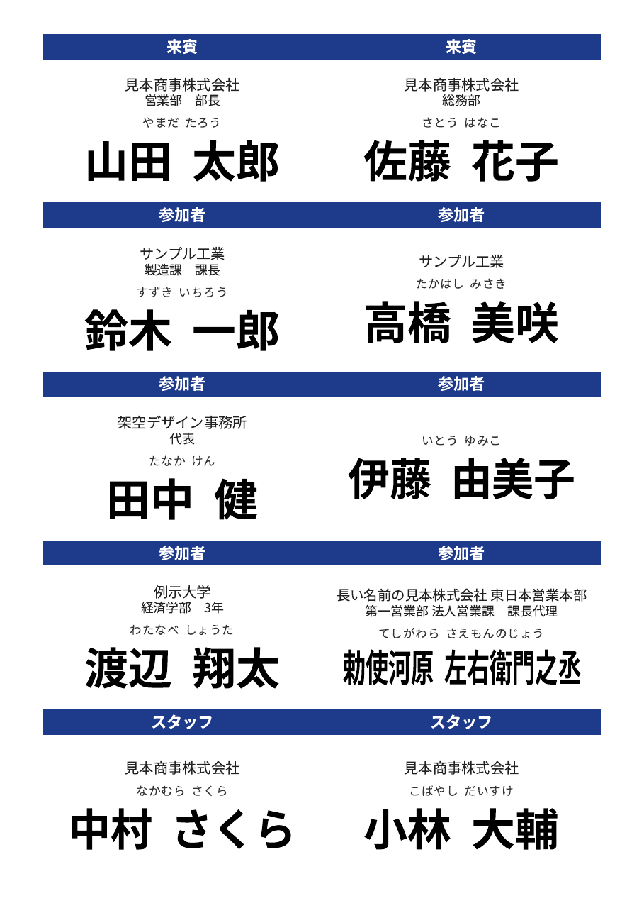

名札・席札の一括印刷
Excel や CSV の参加者名簿から、名刺サイズの名札や二つ折りの席札をまとめて A4 に印刷するツールです。札の幅に合わせて長い名前を自動で詰めるので、1枚ずつ文字の大きさを直す必要がありません。ソフトのインストールは不要で、いつものブラウザで動きます。
500円（税込・買い切り）
お試し版はすべての機能を使えて、印刷は先頭1ページ（名刺サイズなら10枚）までです。決済が終わると、そのまま製品版の画面に移動します。ブックマークしておけば何度でも使えます。

見本のデータで印刷した例（名刺サイズ・区分の帯つき）。名前・会社名は説明のための見本です。右下から2番目は、長い名前を横に詰めた例です。
こんなときに
- 研修・懇親会・忘年会・式典の名札を、Word の差し込み印刷で作ると、長い名前だけ2行になったりはみ出したりして、1枚ずつ直している
- テーブルに置く席札を、向かいの席からも読めるように両面に名前を入れて作りたい
- 来賓・スタッフ・参加者で名札の色を分けたい
- 前回の名刺用紙が途中まで残っているので、空いている面から印刷したい
できること
- 読み込み：Excel（.xlsx）・CSV（UTF-8／Shift_JIS を自動判定）・表の貼り付け。「氏名」または「姓」「名」、「ふりがな」「会社名」「部署」「役職」「区分」「卓」などの見出しから列を自動で選びます（選び直し可）
- 札の種類：名刺サイズ 91×55mm（A4 に 10 枚、名刺サイズ用のネームホルダーに入る大きさ）、大きめ 95×65mm（A4 に 8 枚）、二つ折りの席札 91×55mm・100×60mm（A4 に 4 枚）、A4 を半分に折る大きな名前札（会議・登壇用）。寸法・列・段・余白は mm で直せます
- 長い名前：札の幅に合わせて「横に詰める（文字の高さはそのまま）」か「文字を小さくする」を選べます。会社名・部署・ふりがなも、はみ出さないように縮めます
- 札の中身：ふりがな・会社や団体・部署・役職の表示を選べます。敬称（様・さん・殿）、上の帯（区分か催しの名前）、帯の色（区分ごとに色を変えることもできます）、ゴシック・明朝
- 席札：裏にも名前を逆さに入れるので、山折りにすると両側から読めます。折り線・切り取り線、卓の名前も入れられます
- 印刷の工夫：ふりがな順・会社ごと・卓ごと・区分ごとに並べ替え。使いかけの用紙の途中の面から印刷。当日の参加者に手書きしてもらう空欄の札。普通紙で位置を確かめる「枠だけ試し刷り」と、mm 単位の位置の補正
できないこと（購入前にご確認ください）
- 写真・ロゴ・バーコードは入れられません。文字だけの札です
- 縦書きの名札・席札には対応していません（横書きだけです）
- 市販の名刺用紙・ネームカード用紙は、商品によって余白が違います。用紙の箱に書かれた寸法に合わせて直し、普通紙での試し刷りで位置を確かめてからお使いください
- Excel の読み込みは1枚目のシートだけです
- 印刷の仕上がりはプリンターの設定によって変わります。お試し版で1ページ印刷してみることをおすすめします
- スマートフォンでは操作しにくいため、パソコンでお使いください
よくある質問
| Word の差し込み印刷と何が違いますか？ | Word でも「差し込み文書」→「差し込み印刷の開始」→「ラベル」で名簿から名札を作れます。ただし文字の大きさは全部の札で同じなので、長い名前は1枚ずつ直す必要があります。このツールは札ごとに幅を測って自動で詰め、席札の裏面（逆さの名前）や区分ごとの帯の色も設定だけで作れます。 |
|---|---|
| 名簿のデータはどこかに送られますか？ | 送られません。読み込み・印刷は、すべてお使いのブラウザの中で行います。表示の設定だけをブラウザに保存し、名簿は保存しません。 |
| どんな紙に印刷すればよいですか？ | 名札は、名刺サイズのネームホルダーに入れるなら普通紙か厚めの紙に印刷して切り取り線で切るか、ミシン目入りの名刺用紙を使います。席札は、立てて置くので厚めの紙（ケント紙など）がおすすめです。お使いのプリンターが対応している紙をお選びください。 |
| 印刷すると札が小さくなります | 印刷画面で倍率を「100%（実際のサイズ）」にし、余白を「なし」にしてください。 |
| 何人まで使えますか？ | 製品版は人数の制限はありません。 |
安心してお使いいただくために
- 名簿はお使いのブラウザの中だけで処理し、サーバーには送信しません
- 動作環境：最新版の Chrome・Safari・Edge・Firefox（パソコン）
- 説明どおりに動かない場合は、ご購入から7日以内にご連絡いただければ返金します
宛名の印刷は 宛名ラベルの面付け印刷・はがきの宛名印刷 もあります。名簿の重複は 名簿の重複チェック で先に整えられます。